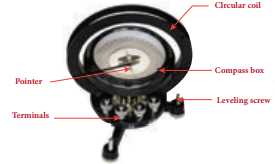
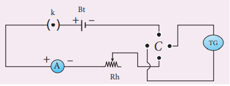
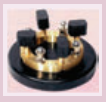

To determine the horizontal component of the Earth’s magnetic field using tangent galvanometer.
Tangent galvanometer (TG), commutator, battery, rheostat, ammeter, key and connecting wires.
B h equal to mew not n k by two r (Tesla
K equal to I by tan theta Ampere
where, B H gives Horizontal component of the Earth’s magnetic field (T)
mew not gives Permeability of free space (4 pai into 10 power minus 7 H m power minus 1)
n gives Number of turns of T G in the circuit (No unit)
k gives Reduction factor of T G (Ampere)
r gives Radius of the coil (meter)


• The preliminary adjustments are carried out as follows.
a. The leveling screws at the base of T G are adjusted so that the circular turn table is horizontal and the plane of the circular coil is vertical.
b. The circular coil is rotated so that its plane is in the magnetic meridian i.e., along the north south direction.
c. The compass box alone is rotated till the aluminium pointer reads 0 degree minus 0 degree.
• The connections are made as shown in Figure (c).
• The number of turns n is selected and the circuit is switched on.
• The range of current through T G is chosen in such a way that the deflection of the aluminium pointer lies between 30 degree minus 60 degree
• A suitable current is allowed to pass through the circuit, the deflections theta one and theta two are noted from two ends of the aluminium pointer.
• Now the direction of current is reversed using commutator C, the deflections theta three and theta four in the opposite directions are noted.
• The mean value theta of theta one, theta two, theta three and theta four is calculated and tabulated.
• The reduction factor k is calculated for each case and it is found that k is a constant.
• The experiment is repeated for various values of current and the readings are noted and tabulated.
• The radius of the circular coil is found by measuring the circumference of the coil using a thread around the coil.
• From the values of r, n and k, the horizontal component of Earth’s magnetic field is determined.
Commutator:

It is a kind of switch employed in electrical circuits, electric motors and electric generators. It is used to reverse the direction of current in the circuit.
Number of turns of the coil n equal to
Circumference of the coil (2πr) equal to
Radius of the coil r equal to
Serial number |
Current I (A) |
Deflection in T G (degree) |
Mean theta (degree) |
K equal to I by tan pai
|
|||
|
|
Theta one |
Theta two |
Theta three |
Theta four
|
|
|
Serial number 1 |
|
|
|
|
|
|
|
Serial number 2 |
|
|
|
|
|
|
|
Serial number 3 |
|
|
|
|
|
|
|
Serial number 4 |
|
|
|
|
|
|
|
Mean |
|
|
|
|
|
|
|
B H equal to mew not n k divided by two r equal to
The horizontal component of Earth’s magnetic field is found to be dash
Note:
1) The magnetic materials and magnets present in the vicinity of T G should be removed.
2) The readings from the ends of the aluminium pointer should be taken without parallax error.
3) The deflections of T G is restricted between 30 degree and 60 degree. It is because, the T G is most sensitive for deflection around 45 degree and is least sensitive around 0 degree and 90 degree. We know that
I equal to k tan theta
or
D I equal to k second square theta d theeta
D theta by d, l equal to sain two theta by two l
For given current, sensitivity d theta by d, l is maximum for sin 2 theeta equal to 1 or theta equal to 45 degree